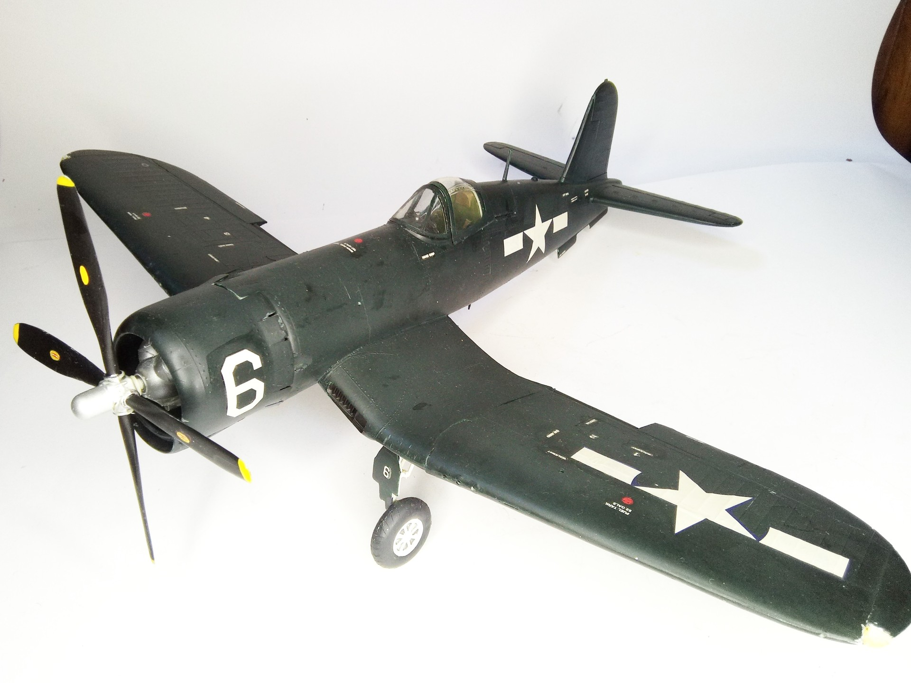
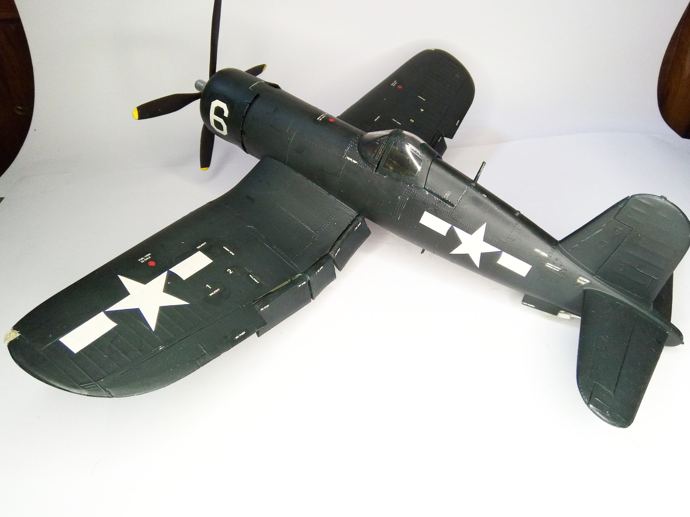

Aerei · scale model archive
Vought Corsair F4U-4
Vought Corsair F4U-4 — Kit: Conversion from Revell, Scale: 1/32. Conversion to the much nicer version, new 4-blade propeller and cowling chin intake…

Photo gallery

English description
Conversion to the much nicer version, new 4-blade propeller and cowling chin intake
#1/32 #Conversion #Revell #Plasticmodels #scalemodels #Corsair
Descrizione italiana
Conversione alla versione molto più gradevole, con nuova elica quadripala e presa d’aria inferiore della cappottatura.